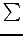
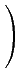
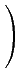

Le problème pour appliquer l'algorithme précédent est qu'on ne peut pas ajouter de variables d'écarts et donc qu'on n'a pas de valeur x évidente dans le domaine de maximisation (dit autrement on n'a pas de sous-matrice identité dans la formulation matricielle du problème et il n'y a pas d'opération de lignes évidente qui permette de le faire).
On va se ramener à des problèmes sous forme ``canonique'' par
la méthode dite en 2 phases. Soit m le nombre de lignes de A
(nombre de conditions dans Ax = b). On ajoute des variables
artificielles
y1,..., ym et on maximise
- yi sous condition
Ax = b, x  0, y
0, y  0
en partant de la valeur initiale 0 pour les variables
non artificielles et b pour y
(on appelle donc
0
en partant de la valeur initiale 0 pour les variables
non artificielles et b pour y
(on appelle donc simplex_reduce avec
un argument matrice obtenue en augmentant A par l'identité, b inchangé
et un c artificiel formé de 0 au début et de 1 en dessous de
l'identité (que simplex_reduce va commencer par annuler).
Si le maximum existe et est 0, on obtiendra une sous-matrice
identité dans les colonnes correspondants à x, et on pourra
éliminer les variables artificielles (dont la valeur sera 0
pour atteindre l'optimum).
Il restera à appliquer à nouveau l'algorithme du simplexe
mais avec le c original (comme les coefficients de c correspondant
à l'identité n'ont pas de raison d'être nuls,
on doit commencer par les rendre
nuls, ce que simplex_reduce fait si on permute les
colonnes pour placer la sous-matrice identité à droite).
Exemple : on cherche le minimum de 2x + 3y - z + t avec les
x, y, z, t  0 et :
0 et :
simplex_reduce([[-1,-1,0,1,1,0,1], [0,1,-1,1,0,1,3], [0,0,0,0,1,1,0]])On obtient comme optimum 0, avec 0 comme valeurs pour les variables artificielles, et la matrice
 

simplex_reduce([[-1/2,0,-1/2,1,2], [1/2,1,-1/2,0,1],[2,3,-1,1,0]])On obtient comme maximum -5, donc le minimum de l'opposé est 5, obtenu pour (0, 1, 0, 2) soit après replacement des colonnes t = 2 et y = 1, les autres nuls.
Pour plus de détails, chercher sur google simplex algorithm
ou dans une bibliothèque Ciarlet ``Introduction à l'analyse
matricielle et à l'optimisation''.